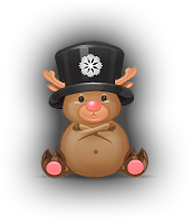

잃어버린 산타 옷을 찾아서 - 크리스마스 이벤트
이벤트 진행 기간: 2017년 12월 14일 정기점검 후 ~ 2018년 1월 11일 정기점검 전산타님이 옷을 잃어버려서 아이들에게 선물을 나눠줄 수 없대요!
추운 크리스마스, 오매불망 산타의 선물을 기다리고 있을 아이들을 위하여
드래곤네스트에서 산타의 옷을 찾아 주세요!
착한 일을 한 용자님께는 산타의 선물이 주어진대요!

- 1단계
-
- 이야기꾼 케시에게 퀘스트를 받는다(퀘스트 1단계를 받아야 루돌프 덕에서 [특제 루돌프 덕 다운] 아이템이 나옵니다!)
- [스테이지] 특제 루돌프 덕 다운 100개
- 산타 선물 주머니 1호(주머니 구성품 : 크리스마스 악몽 모자)
- 2단계
-
- 이야기꾼 케시에게 퀘스트를 받는다([산타 마을 염색약]은 크리스마스 도주로 스테이지에서 드랍되는 [산타오크의 선물 주머니]를 통해서 획득할 수 있습니다.)
- [크리스마스 도주로 스테이지] 산타 마을 염색약 10개
- 산타 선물 주머니 2호(주머니 구성품 : 눈사람의 악몽 정령)
- 3단계
-
- 이야기꾼 케시에게 퀘스트를 받는다
- [아트북 보상] 산타 전문 면허증
- 산타 선물 주머니 3호(주머니 구성품 : 크리스마스 악몽가방 + 루돌프 탈 것)
여기서 잠깐!
이벤트 기간 내 드래곤네스트를 플레이 하면 플레이 시간에 따라아트북 주화 아이템까지 얻을 수 있어요!
단, 보상 획득은 95레벨 캐릭터만 가능합니다.
- 접속시간
- 보상아이템
- 30분
- 산타 마을 주화(1개)
- 1시간
- 산타오크의 양말 주머니(1개/상급가넷 5개, 상급생명의 정수 5개, 중급용사의 무기 강화석 1개, 중급용사의 방어구 강화석 2개)
- 1시간 30분
- 산타 마을 주화(2개)
- 2시간
- 산타오크의 커다란 모자(1개/상급가넷 10개, 상급생명의 정수 10개, 중급용사의 무기 강화석 3개, 중급용사의 방어구 강화석 6개, [GM] 투시 돋보기(7일) 10개)
- 2시간 30분
- 산타 마을 주화(4개)
- 3시간
- 산타오크의 선물 꾸러미(1개/[GM]아이템보호 마법젤리 100개, 고급강화석 주머니, 스페라 주머니)
보너스! 아트북 이벤트
2017년 12월 14일 점검 후 ~ 12월 31일(일) 23:59“산타 마을 주화” 아이템을 아트북에 납부하여, 5단계까지 완료하면 아트북 원화를 소장할 수 있습니다.
단, 아트북 이용은 95레벨 캐릭터만 가능합니다.
- 단계
- 보상
- 납부 아이템
- 1단계
- 크리스마스 반지 한쌍
- 산타 마을 주화(10개)
- 2단계
- 크리스마스 귀걸리
- 산타 마을 주화(10개)
- 3단계
- 크리스마스 목걸이
- 산타 마을 주화(10개)
- 4단계
- 산타면허증(3단계 퀘스트 수령아이템)
- 산타 마을 주화(10개)
- 5단계
- 산타 곽오크 용병+원화
- 산타 마을 주화(10개)